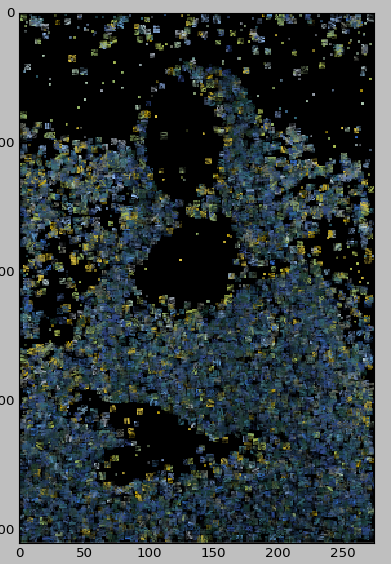
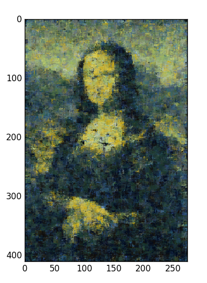
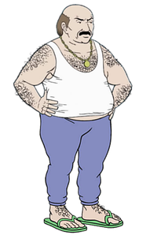
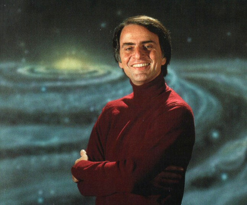
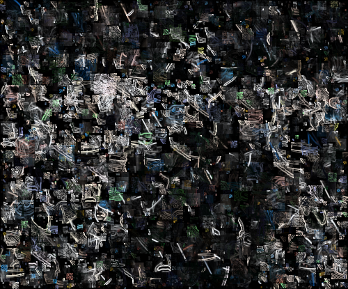

3. Evaluation¶
3.1. Examples of generated images¶
This section presents a few images that were created using our system.
3.1.1. The reference and target images are the same¶
In this run, each agent was given the same image Vincent van Gogh - Starry Night. The simulation was run with 5 agents for 10 000 steps. An agent picked a spot for its stroke randomly.
{kind=link}
3.1.2. Different reference and target images¶
In this run, the agents received the image Vincent van Gogh - Starry Night. The target image was Leonardo da Vinci - Mona Lisa.
{kind=link}
3.1.3. Multiple reference images¶
The simulation was run with 3 agents for 10 000 steps. Each agent received different reference image:
Carl from ATHF
Carl from UP
Carl Gustav
The target image was the following one (Carl Sagan):
The output is shown bellow.
3.2. Conclusion¶
We created a multi-agent system that is able to recreate images in a creative way. The example outputs show that generated images become more and more dissimilar to the target image as we use multiple reference images.
Also, generating images require quite heavy computational power. Even better results might be achieved, if we could afford running a simulation with a larger number of agents and more variable size of brushes.
3.2.1. What pros and cons does your multi-agent system implementation have?¶
Pros:
- It is easy to prove correctness of the results (just by looking at the resulting image)
- Posibility of substantial improvement in performance if the code gets refactored to work on a GPU.
- Results are unexpected, so it is interesting to test the system with different configurations.
- If evaluated as a whole, the system is close to generate creative results.
Cons:
- It takes long time to generate an image.
- No presence of generalization or creative behaviour in individual agents. They evince the expected behaviour of their design.
- Color of canvas affects the system behaviour.